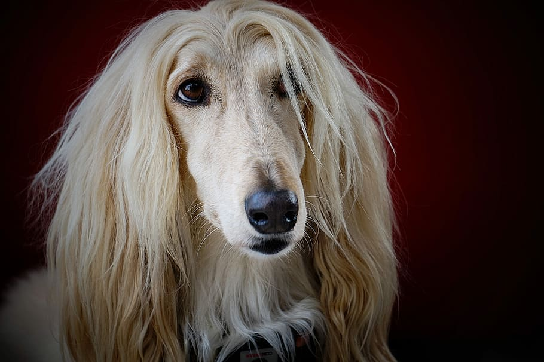

Afghan Hound, o Galgo Afegão!
Chamado de Galgo Afegão ou mesmo de Afghan Hound, este cachorro de grande porte é um dos animais com visual mais icônico de todo o mundo.
Com tons de creme e pelos compridos e sedosos, esse é um cachorro criado no Afeganistão para ser um companheiro de caças e que hoje vêm sendo muito exibido em competições de beleza devido ao seu visual singular.
A seguir, descubra a história do Afghan Hound, bem como as principais características dessa incrível raça de cachorro.
Acredita-se que os ancestrais dos galgos sejam cachorros que tiveram muita fama na época do Antigo Egito, servindo como cães de companhia para faraós e inspirando contos da mitologia egípcia.
Conforme o passar dos séculos, os galgos chegaram ao Afeganistão e ao Oriente Médio, onde se misturaram com outras raças locais, dando origem a raça conhecida como Galgo Afegão.
No passado, essa raça de cães foi desenvolvida e trabalhada para ser uma raça responsável por caçar animais de pequeno porte, como lebres, gazelas e coelhos. Os pelos longos serviam para ajudá-los a tolerar as mudanças de temperaturas abruptas, que faziam com que uma mesma pessoa sentisse muito calor e muito frio em um mesmo dia.
Os cães da raça Galgo Afegão foram levados pela primeira vez à Inglaterra, no século XX e chamaram enorme atenção no país, por suas características marcantes e singulares.Devido ao seu porte elegante e seus traços delicados, os Afghan Hound ganharam imensa popularidade. Aos poucos, eles deixaram de ser cachorros de caça para serem tratados como verdadeiros cães de companhia e cães para serem exibidos em concursos de beleza canina.
História:
Características:

O Afghan Hound é um dos cachorros que adora uma brincadeira.
O Afghan Hound costuma ter pelos longos e finos, que parecem quase humanos, caso estejam bem escovados. Entre suas cores principais, o galgo afegão pode ter cores como creme, branco, preto e cinza entre suas tonalidades majoritárias, mas o cão pode ter todas as cores para ser considerado como parte dessa raça.
Alguns cães Afghan Hound possuem o rosto em uma tonalidade de pelos e o resto do corpo em outra, formando uma combinação singular. Além disso, os cães dessa raça têm um porte elegante e longilíneo que os deixam com uma aparência muito elegante.
A seguir, descubra outras características do Afghan Hound.
Origem: Oriente Médio, na região dos países Irã, Paquistão e Afeganistão.
Peso: O peso médio do Afghan Hound é de 26 kg – 34 kg para ambos os sexos.
Altura: A altura média do Afghan Hound é de:
Fêmea: 60 cm – 69 cm
Macho
: 68 cm – 74 cm
Expectativa de vida: A expectativa de vida do Afghan Hound é de 12 a 14 anos de idade.
Temperamento do Afghan Hound
é um animal bastante inteligente e calmo. Ele costuma gostar de brincadeiras e atividades que façam com que ele tenha que correr e sentir seus pelos balançando ao vento.
No entanto, é um animal que requer muita paciência no adestramento porque costuma ser teimoso e não gosta de obedecer muito. Treinar um afghan hound pode demorar mais tempo do que treinar outros cachorros.
São sensíveis e, caso levem uma bronca mais severa, podem ficar chateados e aborrecidos. Geralmente, é recomendada que sua lealdade fique com apenas um membro da família, para evitar que comandos de outras pessoas atrapalhem seu desenvolvimento.
Costumam ser bastante independentes e não são cachorros que requerem carinho e afagos constantes de seus donos, assim, lidam bem com distância e ausências.
O Galgo Afegão com estranhos e outros animais
O Galgo Afegão precisa ser socializado desde cedo com estranhos e outros animais, para evitar que ele se torne um animal introvertido e que não aceita a presença de terceiros, sejam eles animais ou indivíduos.
Pode não ter muita paciência com crianças ou tolerar brincadeiras mais bruscas, características dos pequenos. É interessante evitar a proximidade do Galgo Afegão com crianças, uma vez que o cão pode se irritar e reagir mal.
O cão Galgo Afegão late muito?
O Galgo Afegão não é um animal que costuma latir muito. Costuma ser mais silencioso e se comunicar com seu dono de outras maneiras.
O Afghan Hound é destruidor?
Caso a energia do Afghan Hound não seja gerenciada da forma correta, pode ser um cão travesso e arteiro, roubando roupas de gavetas ou aprontando pequenas artes na casa inteira.
O cão Afghan Hound é agitado?
Costuma ser um cão quieto, mas com um alto nível de energia. Ele adora correr e pular e, por isso, pode ser interessante fazer com que o cachorro viva em um lar com muito espaço, como uma casa com quintal grande, ao invés de um apartamento, por exemplo.
O galgo afegão requer um alto nível de cuidado e manutenção para que seus pelos longos e sedosos continuem sempre com o visual característico. É preciso escová-los pelo menos três vezes por semana.São cães que também requerem um cuidado especial com as orelhas e com os dentes, precisando que sejam limpos com frequência mais elevada e observados atentamente para o caso de inflamações e infecções que podem atingir o local.
O Afghan Hound costuma ter problemas relacionados a seus ossos. Eles podem apresentar condições como displasias ou deslocamentos nas articulações de suas pernas.Também possuem uma certa tendência a obesidade e é preciso acompanhar sua quantidade de comida diária com atenção, para evitar problemas no futuro.Pode ter menos tolerância à dor que outras raças de cães, devido a sua alta sensibilidade. Por isso, se o cachorro se machucar, mesmo uma leve ferida pode ser muito dolorosa para ele.
Nível de exercício do cão Galgo Afegão
Mesmo tendo espaço para correr, o Afghan Hound precisa de exercícios físicos e atividades diárias com, pelo menos, uma hora de duração por dia. São animais que adoram correr e chegam a atingir uma velocidade maior que alguns cavalos, por exemplo.
Um filhote de Galgo Afegão pode ser vendido por valores que iniciam em R$ 3 mil. Antes de adquirir um cachorro da raça galgo afegão, considere conhecer os abrigos animais de sua cidade para descobrir um cachorro disponível de adoção e colaborar diretamente com a causa animal. Leia o nosso guia de adoção de cachorros para saber mais.
Cuidados
Saúde
Preço